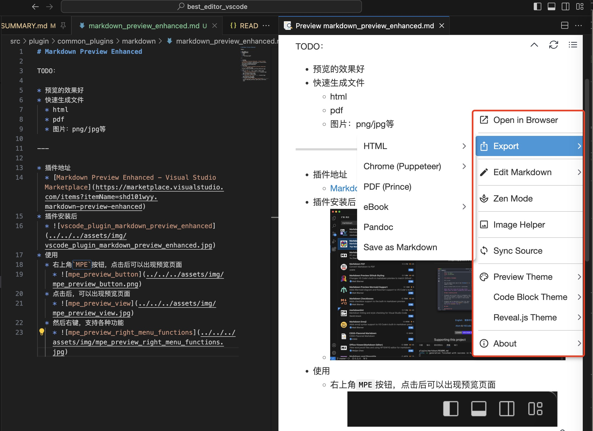

主页
1.1.
前言
1.2.
VSCode简介
1.3.
界面布局
1.4.
常用快捷键
1.5.
代码编辑器常用功能
1.5.1.
打开和新建项目
1.5.2.
代码格式化
1.5.3.
语法高亮
1.5.4.
文件编码
1.5.5.
搜索
1.5.5.1.
普通搜索
1.5.5.2.
正则搜索
1.5.6.
查找函数定义
1.6.
VSCode的智能好用之处
1.7.
Git代码管理
1.8.
集成终端
1.9.
插件
1.9.1.
插件市场
1.9.2.
常用插件
1.9.2.1.
Markdown插件
1.9.2.1.1.
Markdown Preview Enhanced
1.9.2.1.2.
Markdown All in One
1.9.2.2.
indent-rainbow
1.9.2.3.
Bracket Pair Colorizer
1.9.2.4.
Paste Image
1.9.2.5.
文件图标主题
1.10.
调试代码
1.10.1.
调试Python
1.10.1.1.
Mac中用VSCode调试Python
1.10.1.2.
Windows中用VSCode调试Python
1.10.1.3.
经验心得
1.11.
性能
1.12.
附录
1.12.1.
参考资料
本书使用 HonKit 发布
Markdown Preview Enhanced
Markdown Preview Enhanced
TODO：
快速生成文件
html
pdf
图片：png/jpg等
插件地址
Markdown Preview Enhanced - Visual Studio Marketplace
插件安装后
使用
右上角
MPE
按钮，点击后可以出现预览页面
点击后，可以出现预览页面
然后右键，支持各种功能

results matching "
"
No results matching "
"